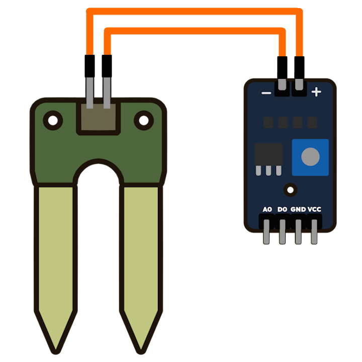
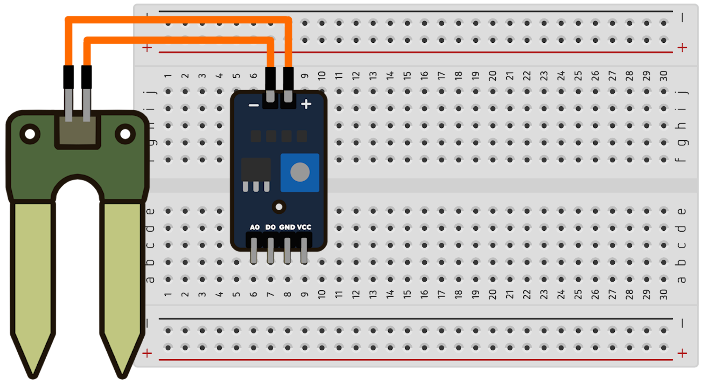
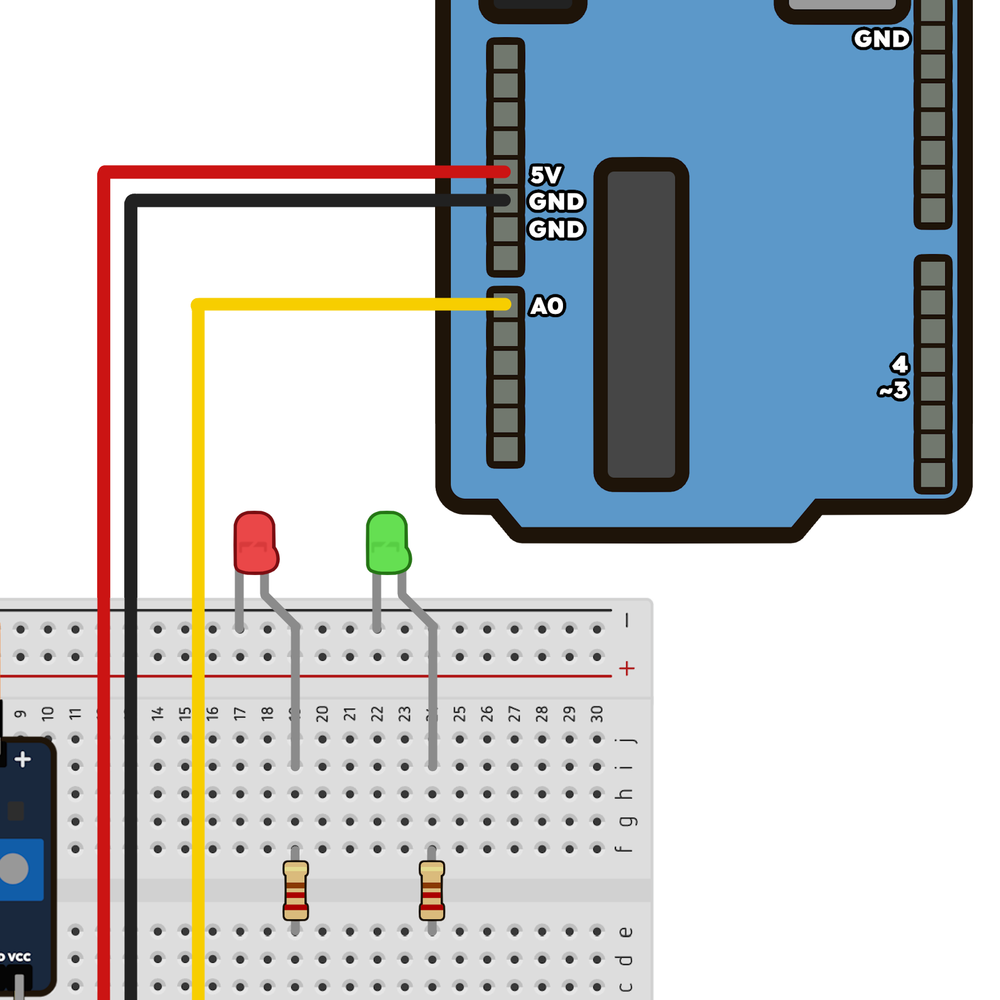

🤖 Bônus: Faça você mesmo!
- Objetivo: Criar um medidor de umidade do solo
Neste tutorial, vamos montar um medidor de umidade do solo usando Arduino e materias de robótica. Este projeto prático é um excelente exemplo de como a tecnologia desenvolvida nas cidades, pode ser aplicada em uma grande plantação ou até mesmo em uma pequena horta no espaço urbano.
- Materiais necessários:
- 1 Computador ou Notebook
- 1 Placa Arduino
- 1 Cabo USB
- 1 Protoboard
- 1 Sensor de umidade de solo (sonda + módulo)
- 1 LED verde 5mm
- 1 LED vermelho 5mm
- 2 Resistores de 220 Ohms
- 2 Fios Jumper Fêmea-Fêmea
- 6 Fios Jumper Macho-Macho
1º Passo - Conectar as peças do sensor
Use os dois fios Fêmea-Fêmea para conectar a sonda metálica nos dois pinos do módulo comparador.
2º Passo - Conectar o sensor na protoboard
Encaixe o módulo comparador na protoboard, de forma que seus quatro pinos fiquem em fileiras separadas para facilitar as conexões.
3º Passo - Ligar o sensor ao Arduino
Use os fios Macho-Macho para fazer as seguintes conexões:
- Pino GND do módulo para o pino GND do Arduino.
- Pino VCC do módulo para o pino 5V do Arduino.
- Pino A0 (analógico) do módulo para o pino A0 do Arduino.
4º Passo - Adicionar os LEDs e resistores
Posicione os LEDs na protoboard. O pino menor (negativo) de cada LED deve ir para a linha azul (negativa) da protoboard. Conecte um resistor na mesma fileira do pino maior (positivo) de cada LED.
5º Passo - Finalizar as conexões com o Arduino
Faça as últimas conexões:
- Conecte a linha negativa da protoboard a outro pino GND do Arduino.
- Conecte o resistor do LED verde à porta digital 3 do Arduino.
- Conecte o resistor do LED vermelho à porta digital 4 do Arduino.
Montagem completa!
Se a montagem estiver correta, seu projeto deve se parecer com a imagem abaixo. Agora, vamos para a programação!

Programação e Código
Conecte o Arduino ao computador com o cabo USB. Abra o Arduino IDE (editor na nuvem ou programa instalado). Crie um novo "Sketch", cole o código abaixo e clique em "Upload" para enviar à placa.
/* Programa: Sensor de Umidade do Solo */
/* Codigo desenvolvido por Robótica Paraná */
/* Definições de pinos para o sensor e para os LEDs */
#define pino_Sensor A0
#define pino_LED_Verde 3
#define pino_LED_Vermelho 4
/* Porcentagem de umidade mínima para iniciar a irrigação */
int Valor_Critico = 45;
/* Variável para armazenar o valor analógico do sensor */
int ValAnalogIn;
void setup() {
/* Inicia a comunicação serial com a velocidade de 9600 bauds */
Serial.begin(9600);
/* Configura os pinos dos LEDs como saída */
pinMode(pino_LED_Verde, OUTPUT);
pinMode(pino_LED_Vermelho, OUTPUT);
} /* End Setup */
void loop() {
/* Realiza a leitura do sensor e armazena o valor na variável ValAnalogIn */
ValAnalogIn = analogRead(pino_Sensor);
/* Converte o valor analógico para porcentagem */
int Porcento = map(ValAnalogIn, 1023, 0, 0, 100);
/* Imprime o valor em Porcento no monitor Serial */
Serial.print(Porcento);
/* Imprime o símbolo junto ao valor encontrado */
Serial.println("%");
/* Se a porcentagem for menor ou igual ao valor definido */
if (Porcento <= Valor_Critico) {
/* Imprime a frase no monitor serial */
Serial.println("Umidade baixa!");
/* Acende o LED Vermelho */
digitalWrite(pino_LED_Vermelho, HIGH);
/* Apaga o LED Verde */
digitalWrite(pino_LED_Verde, LOW);
} /* End if */
/* Se não... */
else {
/* Imprime a frase no monitor serial */
Serial.println("Umidade Adequada...");
/* Acende o LED Verde */
digitalWrite(pino_LED_Verde, HIGH);
/* Apaga o LED Vermelho */
digitalWrite(pino_LED_Vermelho, LOW);
} /* End else */
/* Aguarda 1 segundo para reinicializar a nova leitura */
delay (1000);
}/* End Loop */
Conclusão
Parabéns! Você montou um sistema que automatiza uma tarefa agrícola, unindo componentes eletrônicos (cidade) a uma necessidade prática (campo). Este projeto é a prova de que, com criatividade e conhecimento, podemos criar soluções incríveis que fortalecem a conexão campo-cidade.
Para visualizar a montagem em detalhes, explore o modelo 3D interativo abaixo.
🌱 Veja em 3D: Sensor de Umidade do Solo
Explore este modelo interativo para ver todos os componentes em detalhes.
Modelo: Aula 12 - Sensor de Umidade do Solo por Robótica Paraná no Sketchfab.